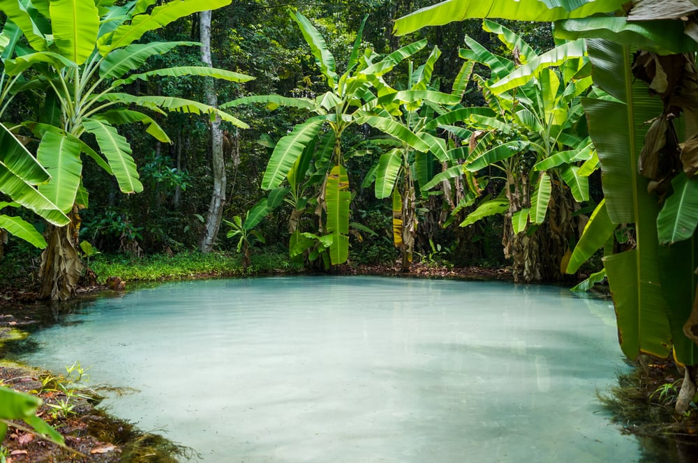
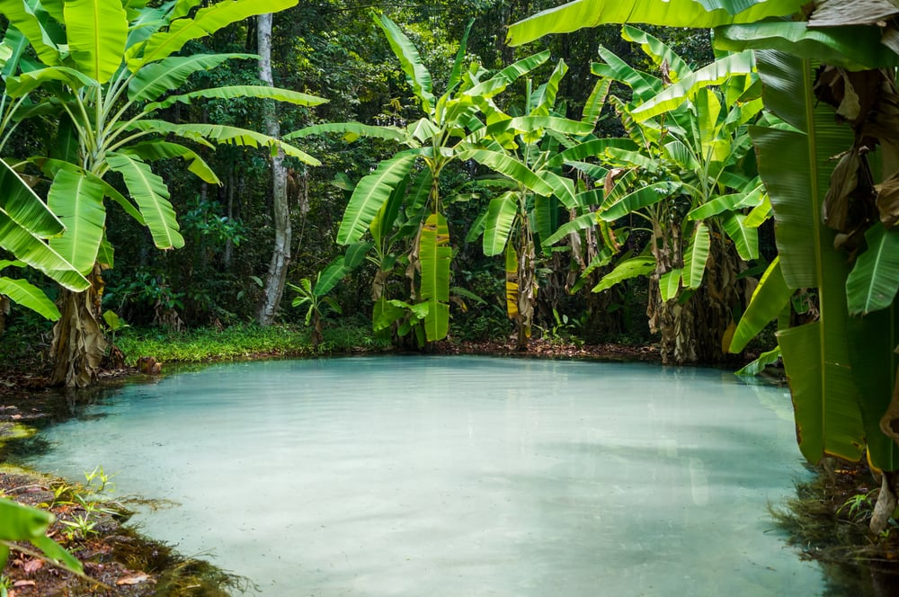
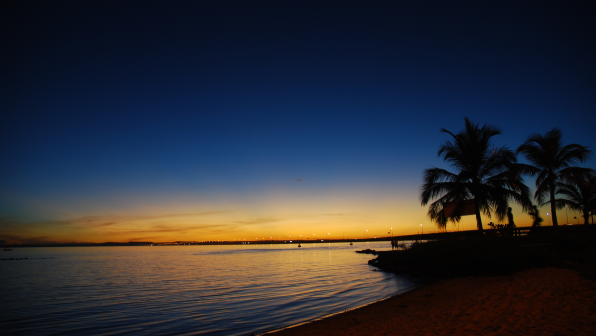
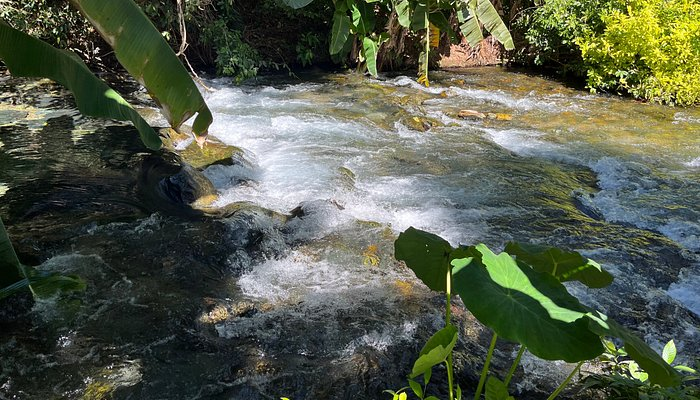
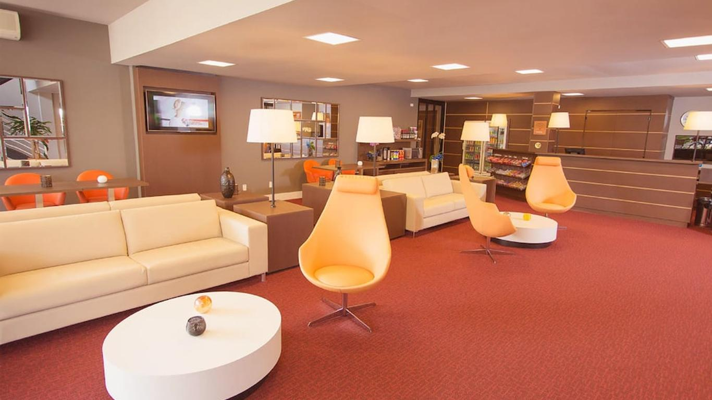
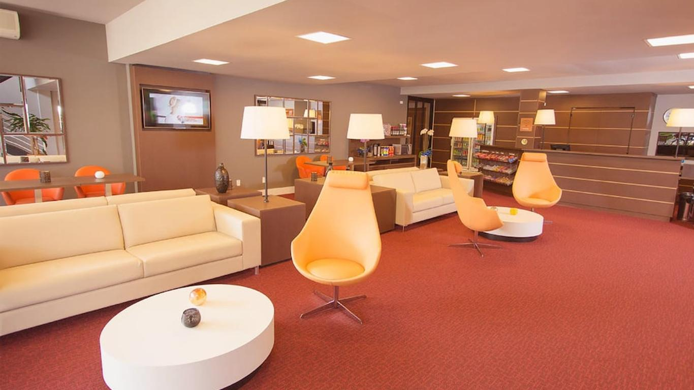
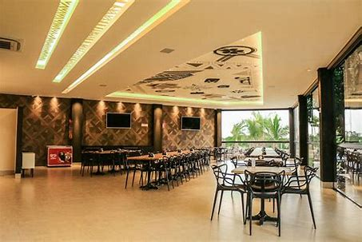
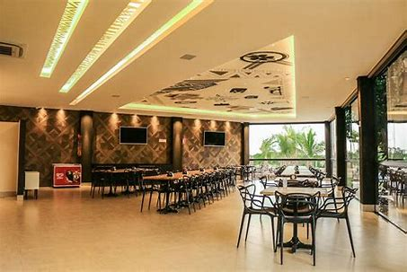

Tocantins
Criado em 1988 pela Assembleia Nacional Constituinte, o Tocantins é o mais novo dos 26 estados do Brasil. Localiza-se na região Norte, exatamente no centro geográfico do país, condição que lhe possibilita fazer limites com estados do Nordeste, Centro-Oeste e do próprio Norte.
 

QUAIS LUGARES POSSO IR?
Praia Da Graciosa - Palmas
Plano Diretor Sul, Palmas - TO
Cachoeira do Formiga - Mateiros

Mateiros - TO, 77593-000
Rio Azuis - Aurora do Tocantins
Aurora do Tocantins - TO, 77325-000
ONDE FICAR EM TOCANTINS?
Hotel 10 Palmas (★★★☆☆)
 

O Hotel 10 Palmas oferece 105 acomodações com ar-condicionado, frigobar e cofre para laptop. Cada acomodação é decorada individualmente.
Clique aqui para agendar sua hospedagem!Ceu Palmas Hotel (★★★★☆)
Hotel vitoriano com café da manhã gratuito e academia 24 horas.
Clique aqui para agendar sua hospedagem!Hotel Araguaia (★★☆☆☆)
Hotel em Palmas com café da manhã gratuito e recepção 24 horas Este hotel para não fumantes oferece restaurante, cafeteria e business center.
Clique aqui para agendar sua hospedagem!RESTAURANTES
Rosa Madalena Gastrobar - Palmas
Pratos para happy hour · Ótimos coquetéis · Música ao vivo
Clique aqui para saber mais!Dona Maria Beachs - Palmas
 
 Você poderá apreciar uma refeição extremamente saborosa ao mesmo tempo que contempla a paisagem privilegiada do Lago de Palmas.
Clique aqui para saber mais!Choupana do Lago - Palmas
Mais uma opção que fica na Praia da Graciosa, o Choupana do Lago tem uma história baseada na culinária regional e por isso, bem como pela sua qualidade, merece estar nessa lista de melhores restaurantes em Palmas.
Clique aqui para saber mais!